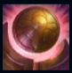
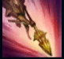
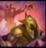
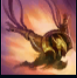
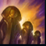

Azir

| Azir The Emperor of The Sands | |
|---|---|
| Release date | 16.09.2014 |
| Class | Specialist |
| Positions | Middle |
| Resource | Mana |
| Range type | Ranged |
| Adaptive type | Magic |
| Base statistics | |||
| Health | 552 – 2116 | Mana | 480 – 837 |
| Health regen. | 7 – 19.75 |
Mana regen. | 8 – 21.6 |
| Armor | 19 – 70 | Attack damage | 52 – 99.6 |
| Magic resist. | 30 – 38.5 | Crit. damage | 175% |
| Move. speed | 325 | Attack range | 525 |
Azir a fost odată împăratul imperiului antic al Shurimei, un muritor care aproape că a reușit să atingă nemurirea. Cu toate acestea, mândria l-a orbit și, în clipa în care ar fi trebuit să fie pe culmea triumfului, a fost trădat și ucis. Acum, după lungi milenii, a renăscut sub forma unei ființe iluminate, înzestrate cu o putere imensă. Orașul lui îngropat s-a ridicat din nisipuri, iar Azir încearcă să-i readucă Shurimei gloria de odinioară. |  |
MOȘTENIREA SHURIMEI Azir poate invoca ''Discul soarelui'' din ruinele unui turn aliat sau inamic. |
||
|---|---|---|---|---|
 |
FURIA NISIPURILOR Azir trimite toți soldații nisipurilor spre o locație. Soldații nisipurilor le provoacă daune magice tuturor inamicilor prin care trec și le aplică un efect de încetinire ce durează o secundă. |
|||
 |
REÎNSUFLEȚIRE! Azir invocă un soldat al nisipurilor care atacă în locul lui țintele din apropiere, înlocuind atacul său de bază împotriva țintelor aflate în raza de atac a soldatului. Atacurile soldaților provoacă daune magice tuturor inamicilor în linie dreaptă. Totodată, ''Reînsuflețire!'' le oferă în mod pasiv lui Azir și soldaților săi un bonus la viteza de atac. |
|||
|  |
NISIPURI MIȘCĂTOARE Azir se apără cu un scut pentru scurt timp și se năpustește către unul dintre soldații nisipurilor, provocându-le daune inamicilor. Dacă lovește un campion inamic, un nou soldat devine disponibil pentru a fi invocat, iar năpustirea ia sfârșit. |
|||
 |
FURTUNA DEȘERTULUI Azir invocă un zid format din soldați care înaintează, împingând în spate inamicii și provocându-le daune. |